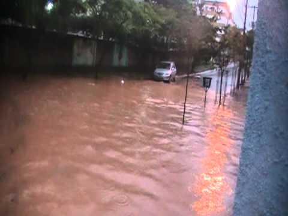
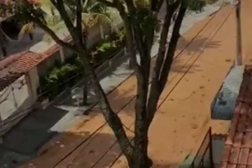

O APOEMA tem como objetivo ajudar motoristas em situações de risco , caudas por temporais e chuvas ,não se precupe estaremos ao seu lado , com as melhores informaões e sugestões para poupar os danos materias e salvando vidas!.
Rua Osmar Costa alagada
Ações sugeridas
Na região norte o perigo é o menor entre todas as outras região mas fica atento aos desvios sugeridos .
Outros locais afetados
Desvios Sugeridos